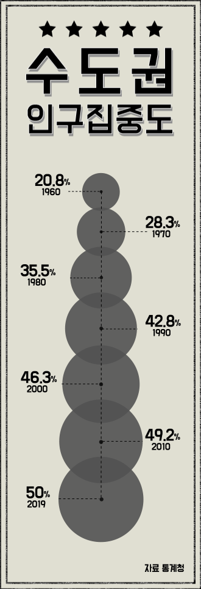
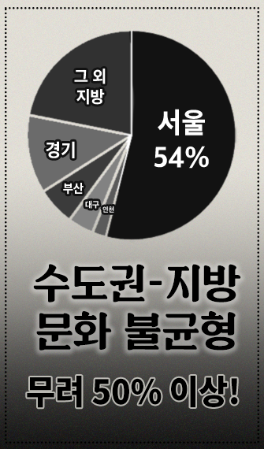
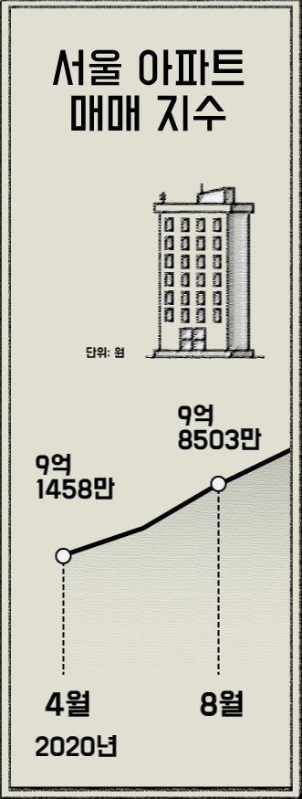
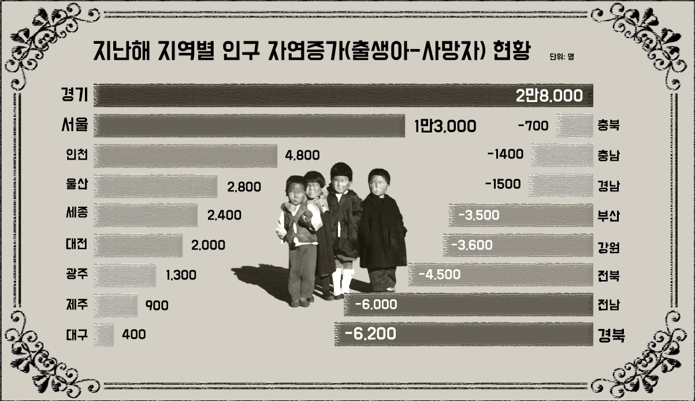
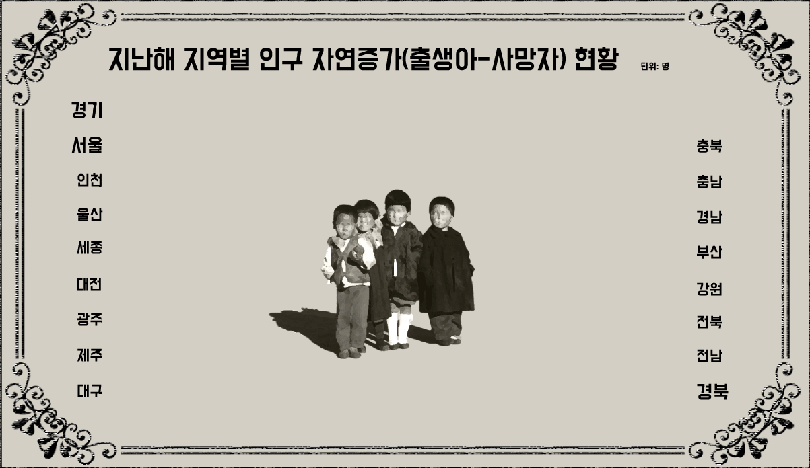

서울공화국
221031-0204-984호


수 도 권 집 중 특 집


서울共和國과 '非서울시민'의 삶

의료도 ‘서울공화국’…
의료 인력 양·질 서울 집중…
“의료 시스템 개편해야”
[특별취재팀=○○○기자] 서울에 모든 인프라와 자원이 몰리는 ‘서울 공화국’ 현상이 의료문화 부문에서도 심화되고 있다. 의료 인력이 서울 근무를 선호하면서 지방 병원에서는 인력이 부족해
유지도 어려운 실정이다.
지방, 일자리·인프라 부족에 인구 유출 가팔라
시군구 절반 소멸 위험, 소멸 고위험도 45곳
에 따르면 지난해 서울·경기·인천 등 수도권 인구는 2608만1700명으로 우리나라 전체 인구(5173만8071명)의 50.4%에 달해 비수도권 인구 수를 넘어섰다. 인구의 절반 이상이 수도권에 몰려 있는 셈이다. 최근 5년간 인구수 추이를 보면 수도권은 △2017년 2551만9439명 △2021년 2608만1700명으로 꾸준히 늘었다. 반면 서울·경기·인천을 제외한 나머지 비수도권 지역의 총 인구수는 감소세다. 지방의 인구 유출로 수도권 몸집을 키우고 있는 셈이다. 수도권으로 인구가 몰리는 이유는 학교, 기업, 병원, 문화시설 등 생활에 필요한 모든 인프라가 집약돼 있기 때문이다.

